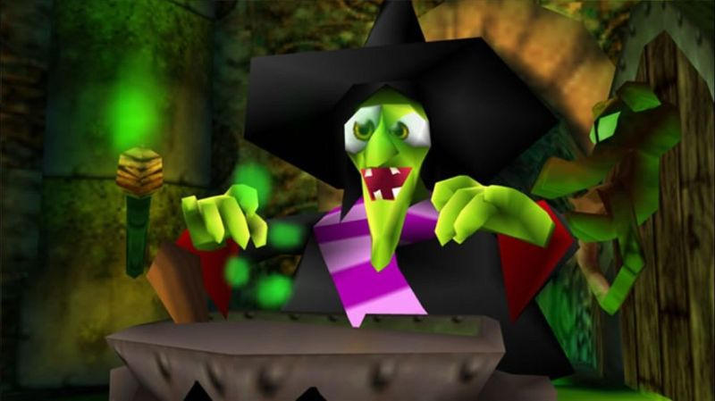
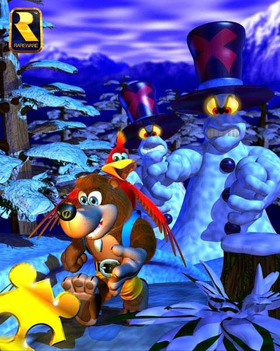
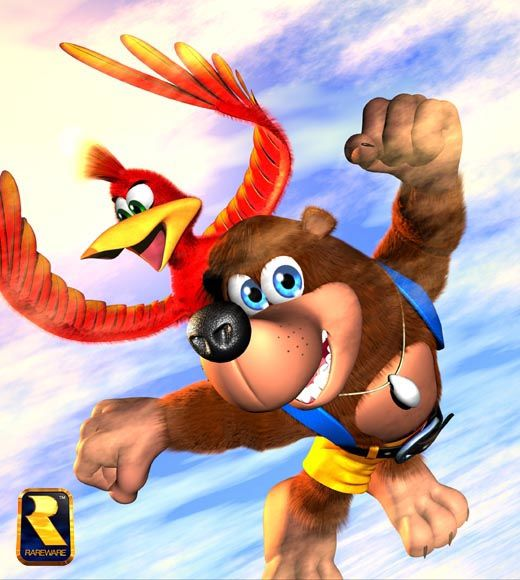
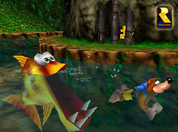
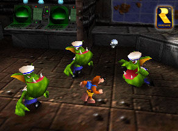
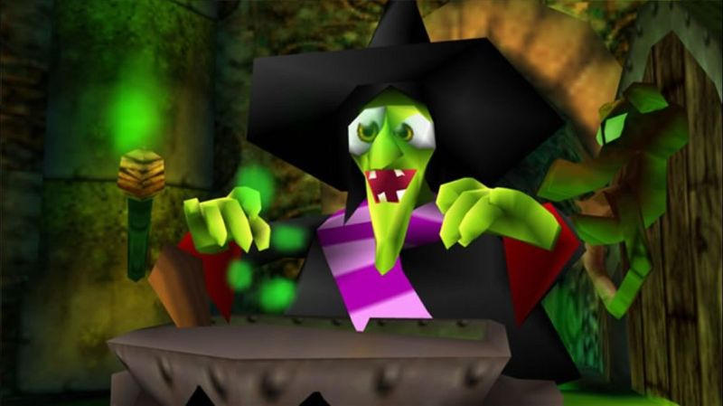
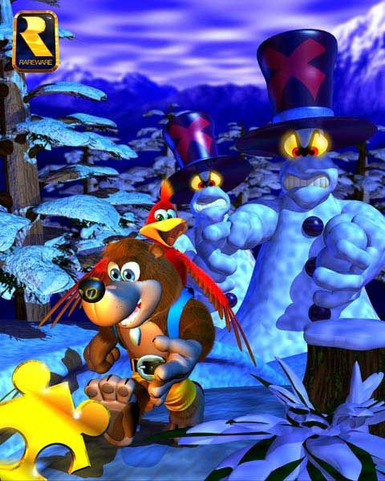
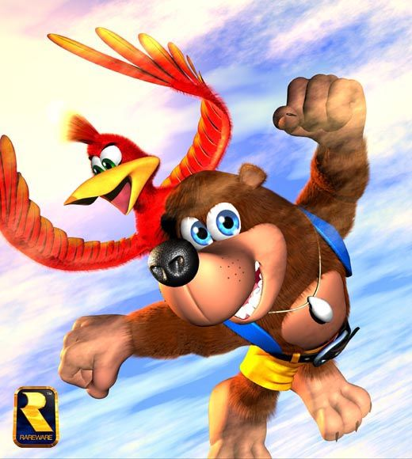
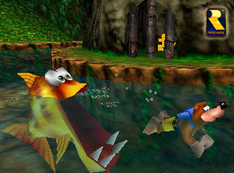
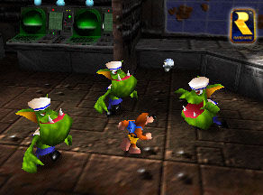

Publishing Info
- Published by: Nintendo Co., Ltd.
- Developed by: Rare Limited
- Released: 1998
- Platforms: Nintendo 64, Xbox 360
Description
Banjo-Kazooie's fairy tale back story is reminiscent of Snow White's. A gnarled, ugly witch named
Gruntilda asks her magical cauldron who is the fairest of them all. Of course, the pot's answer doesn't
please the hag: he singles out Banjo's sister, Tooty. When Tooty turns up missing, Banjo and his birdie
buddy Kazooie set out to find her.
The worlds in Banjo-Kazooie are vast, and contain a variety of items to collect. Musical Notes, Puzzle
Pieces ("Jiggies"), Mumbo Tokens, and Jinjoes are just some of the swag that Banjo must stuff in his
backpack to complete his adventure. While some of the necessary items are simply stashed off the beaten
path, others will require puzzle solving skills to turn up.
Game Categories
- Genre: Action
- Perspective: 3rd-person (Other)
- Gameplay: Platform, Puzzle elements
- Interface: Direct control
- Setting: Fantasy
Quotes
In its day, Banjo Kazooie revolutionised platforming: it brought together impeccable gameplay, fantastic level design, great music, and a perfect story - from start to finish, the game was a joy to play.
-- Nintendo Life (Apr 01, 2009)
Seriously folks, Banjo-Kazooie is another reason to buy an N64. This is the best 3D platformer I have ever played, and a more than worthy successor to Super Mario 64. From the beginning to the surprise ending, everything about this game screams quality. The kicker is that this game will work in conjunction with its sequel, Banjo-Tooie. Get your copy now. Rare has done it again.
-- IGN (Jun 30, 1998)
Gallery
 








